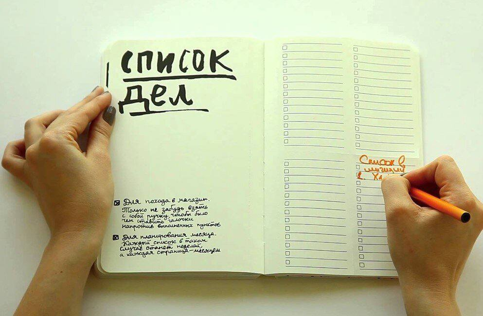

<div class="container-about">
  
  <div>
    <p>
      Вам кажется, что вы весь день крутитесь как белка в колесе и вам не
      хватает времени на что-то очень важное? Например, вы не успеваете
      пообщаться с родными и близкими или заняться творчеством. Или просто
      воплотить в жизнь планы, которые вечно откладываете в долгий ящик.
    </p>
    <p>
      Если вы будете постоянно концентрироваться на заданиях, до которых у вас
      не доходят руки, или на том, что сегодня вам снова ничего не удалось
      сделать, вы можете попасть в порочный круг, из которого очень тяжело
      выбраться. Всё это постепенно приведёт к стрессу и эмоциональному
      выгоранию. Картина окажется довольно печальной: задания в вашем списке дел
      никогда не закончатся, а работы будет только прибавляться.
    </p>
    <p>
      Но есть способ вырваться из этого круга. Если вы на минутку остановитесь,
      посмотрите на ваш список дел и признаете, что сделали много действительно
      стоящих вещей, у вас появится достаточно мотивации, силы воли и
      целеустремлённости для дальнейшей работы. Вы увидите, в каком направлении
      вам двигаться дальше.
    </p>
    <p>
      Когда вы научитесь грамотно составлять списки дел, то будете эффективнее
      работать и выкраивать достаточно времени на другие важные аспекты жизни,
      не теряя при этом сил и вдохновения.
    </p>
    <p>
      Каждый из нас когда-то составлял список дел. Это распространённый метод
      повышения продуктивности. Мы составляем списки дел в попытке внести
      порядок в беспорядочное течение жизни. Это чисто человеческая черта.
      Однако эффект от составления списка дел иногда расстраивает и откровенно
      разочаровывает.
    </p>
  </div>
</div>
